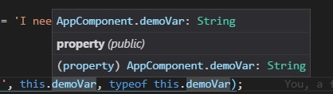
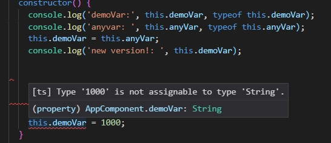

As you might imagine, one of the most important things about a language named Typescript is utilizing static typing. This is the act of declaring our variables and methods and making sure we specify exactly what type of data it is going to contain, take in, or return.
This is probably the easiest example to demonstrate. Take the following example:
public myVar:string;
Here we have declared a variable myVar and given it a type string. If you attempt to assign it a value that is any other type, such as 3 or false, we will get an error with one exception that a certain dog is sure to remind me later in the lesson. It is important to note that we are not giving the variable an initial value in this example. We can do that if we want:
public myVar:string = 'I need healing';
We have declared the variable myVar, given it a type string, and given it the value: 'I need healing'. One little shortcut to note: If you you give a variable an initial value, the type will automatically be assigned based on the value of the variable. So the following:
public myNum = 1979;
This declares a variable myNum, gives it a value of 1979, and automatically assigns it as a type of number because of the value we assigned the variable. This is known as type inference. As you begin your Angular adventure, it is probably a good idea to avoid using type inference to start, but as you get more comfortable with typing everything, feel free to use it.
On another note, failing to give a variable a type automatically assigns it the type any. We will see how dangerous this can be in a bit.
We can declare an array of a certain type simply by putting [] at the end of the type. Peep this example:
public myArr:string[];
By adding the square brackets [], we have declared that the variable myArr is going to be an array of strings. Similar to variable declaration, please note that this is not assigning any value to this array, we are simply declaring it. If you try to push to this array without initializing it first, you will get an error about trying to apply .push to undefined. You can avoid this simply by giving it an empty value, either at the point of declaration (works, but not ideal), or later in your code where you plan to utilize said array (preferred). Here's both examples:
public myArr:string[] = [];
OR
public myArr:string[];
(later in the code INSIDE A METHOD)
this.myArr = [];
We can also use typing to display the input and output of a method as well. Behold this method:
public someFunkyMethod(myVar:string):boolean {
if (myVar === 'ted') {
return true;
} else {
return false;
}
}
Here we are declaring a new method named someFunkyMethod. In the first highlight, we are declaring that it will take in one parameter named myVar, and it has to be a string. If we tried to call it somewhere else and pass in a number, we would get an error. The second highlighted part says that we are declaring that this method will always return a boolean. If we had declared that, but then failed to return a boolean, we would get yet another error.
Why do I even need to use types in the first place? Can't I make everything "any" and just be on my merry way?
Techinically, yes, you can, and it will work, but you would be robbing yourself of one of the main benefits of using Typescript in the first place. Those benefits include
It protects you from yourself. If you accidentally pass a variable of the wrong type, or put an incorrect variable type in a method, you will get the error in development, not in run-time. This means you can prevent bugs in your app before they happen, because your IDE is letting you know ahead of time. Nothing is more annoying than running your app thinking everything is great and then having to go through thousands of lines of code to try to figure out what went wrong. The more errors our IDE gives us while we're coding, the easier it will be to catch bugs before they bite you.
It helps your auto-complete inside your IDE. This will become more apparent when we go into creating your own types with interfaces, and will also benefit us when working with classes.
It makes our code more readable. We can look at the method and see what its taking and giving our with a little more clarity. Sometimes our variable names aren't descriptive enough, or we didn't write enough comments. Sure, just seeing the typing isn't going to give you instant comprehension of a method, but it definitely helps.
We can make our own types too! In fact, let's talk about that.
An interface is another type of blueprint that allows us to declare our own custom types. We usually keep our interfaces in a seperate file, that itself in is a seperate interfaces folder. Here's an example of an interface I would call Deck.ts:
interface Card {
suit: string;
rank: string;
}
export default Card;
I've used an interface to create a new type Card. It is an object that will have two properties: rank and suit, and both must be strings. Thanks to the export command below, we can now import this interface in our other files and utilize this custom class:
import { Component } from '@angular/core
import Card from './../../interfaces/card'
@Component({
selector: 'app-myclass',
templateUrl: './myclass.component.html'
})
export class MyClass {
public myCard:Card = {
rank: 'K'
suit: 'clubs'
}
}
I've created a new variable myCard, and declared it a type Card. Because we gave it a type Card, it must be an object, with properties rank and suit that are both strings. If I tried to assign a value like false or [] or 10, or I made one of the properties a boolean, I'm going to get an error.
This can be SUPER important when we start dealing with larger and more complex objects that have lots of properties. Imagine you are creating an app in which everyone has a user profile. We can create an interface to make sure that we store their name, email, password, phone number, address and Overwatch main character. Then when we import that interface and start using it, we can make sure that we don't forget one of those fields because if we do, the IDE will warn us. Creating a custom type helps maintain the integrity of the data we are passing around our application.
As an extra added bonus, it also helps our auto-complete. If I refer to a variable of type Card and I push the . to begin to input a property, the autocompleter will give us an option of both rank and suit because it knows those are the properties associated with that interface.
Interfaces are awesome. Use them. Now as for the next lesson...
Wait! You said earlier that you would talk about that exception when it comes to type values. Is there a way to break our typing?!
And here I thought you would forget. Okay, yes, there is a way to break our typing through use of the any type. Let's look at this example:
public myString:string = 'I still need healing!';
public myNum:any = 3;
public mysteryMethod() {
this.myString = 3;
console.log(this.myString);
}
So this should make sense: we made a string and gave it a value that is a string, which is cool. We gave a variable of type any a number, which is also cool. And the highlighted text should shoot an error, because we're trying to give a string a number, which is uncool. So let's remove it:
public myString:string = 'I still need healing!';
public myNum:any = 3;
public mysteryMethod() {
console.log(this.myString);
}
So now, everything should work. What's more important is that if you hover over the variable this.myString in the console.log, VS Code will tell you that the variable is a type String.
So now, what happens if we do this?
public myString:string = 'I still need healing!';
public myNum:any = 3;
public mysteryMethod() {
this.myString = this.myNum;
console.log('The value of myString is: ', this.myString);
}
If you try this in your compiler, not only will it work, but the console log will give you this:
The value of myString is: 3
Whaaaaaaaaaat?!?!
I know, right? If you assign a variable as a type any, not only can you put anything into that value, but you can assign the value of that variable to another variable, even it it violates the type. Whoa.
You can see how this can be dangerous. You can be expecting a variable to be a number, attempt all kinds of math operations on it, but then it's a string and your function is all messed up. Wanna know whats even crazier? Even after assigning our first variable a value that violated it, typescript still thinks it has the original type.
Hopefully, your head hasn't exploded yet. It may be difficult to grasp how this is happening, but the important part to know is that this was all cause by setting one variable to a type any and passing it around. So try to avoid using any wherever you can.